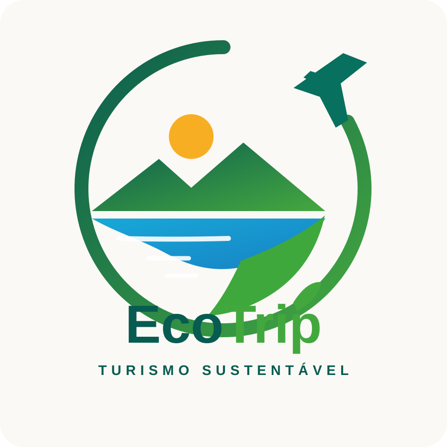

Turismo consciente
EcoTrip — Turismo Sustentável
O EcoTrip é um projeto acadêmico que apresenta passeios e incentiva escolhas mais conscientes, valorizando a natureza e as comunidades locais.
Ver passeios
Nosso compromisso
Turismo que respeita o meio ambiente
Planejar uma viagem também é pensar no impacto das nossas escolhas. Veja algumas atitudes simples:
- Priorize transporte coletivo ou compartilhado.
- Valorize pequenos negócios da região.
- Evite desperdícios durante a viagem.
- Respeite os espaços naturais visitados.
Para conhecer as áreas protegidas do país, consulte o site do ICMBio (abre em nova aba).
Inspire sua próxima viagem
Parques nacionais para conhecer
| Destino | Estado | Tipo de experiência |
|---|---|---|
| Parque Nacional da Tijuca | RJ | Natureza e trilhas |
| Parque Nacional dos Lençóis Maranhenses | MA | Paisagem e ecoturismo |
| Parque Nacional do Iguaçu | PR | Cachoeiras e natureza |
Reservas de passeios
Vagas dos passeios do EcoTrip
Veja quantas vagas ainda restam em cada passeio e qual é a situação de cada um. As vagas são dados de exemplo do projeto.
Novo passeio
Cadastrar um passeio
Preencha os dados para incluir um passeio na lista de vagas.
Impacto sustentável
Indicadores de turismo consciente
Dados ilustrativos mostrados em dois tipos de gráfico: um em SVG e outro em Canvas.
Conteúdo multimídia
Conheça o conceito do EcoTrip
Texto do vídeo: "Bem-vindo ao EcoTrip. Descubra experiências com mais consciência. Viaje, preserve e aproveite cada momento."